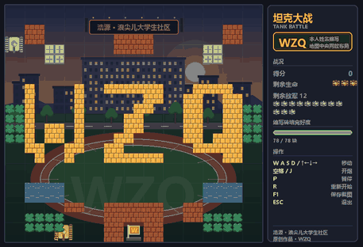

C / C++
入门2026 年 6 月起自学。掌握变量、输入输出、条件分支、循环与嵌套循环。
尚未涉及数组、指针与结构体 —— 计划在大一上学期补齐。
新疆大学 · 2026 级新生
机械设计制造及其自动化专业。
高考结束后开始自学编程，入学前完成了第一个能跑起来的作品。
机械设计制造及其自动化 · 本科
国家「双一流」建设高校
2026.09 — 2030.06
预计毕业
2026 级新生，尚未入学，因此本页不列 GPA 与在校课程 —— 下面展示的是入学之前我已经做出来的东西。
下面每一条都对应一个真实存在的源文件，时间取自文件创建日期。
高考结束。一个计算找零的小程序，17 行。scanf / printf / 变量。
厘米转英寸。开始处理整数与浮点的取值差异。
收银找零，加入 if / else 判断票额是否足够。
用 while 循环把一个整数逐位拆开。第一次写循环。
循环 + 标志变量。开始理解「用一个变量记录状态」这件事。
输出 100 以内全部素数。两层循环，一个月里最复杂的一个。
换一种方式做更大的东西：由我定义需求与验收标准，用 AI 编程工具实现一个可运行的完整游戏。
每一项都按实际掌握程度标注，不夸大。
2026 年 6 月起自学。掌握变量、输入输出、条件分支、循环与嵌套循环。
尚未涉及数组、指针与结构体 —— 计划在大一上学期补齐。
坦克大战作品的项目语言，配合 pygame 使用。
能读懂项目结构与配置项，独立编写能力仍在建立中。
能把一个模糊想法拆成明确需求、约束与验收标准，驱动工具产出可运行的成品，并完成验收与交付。
这是我目前最有把握的一项能力。
代码托管、版本管理、静态页面部署。
我的角色：需求定义与验收
我确定了玩法目标与全部约束 —— 原创校园场景底图、战场中央用砖墙拼出姓名缩写 WZQ、不使用任何第三方图片与音频素材 —— 由 AI 编程工具实现，我负责运行验收、演示录制与交付打包。

Python 3.12 · pygame 2.6 · 全部美术与音效由代码生成
说明：本项目的代码实现由 AI 编程工具完成，我的贡献是需求定义与验收， 不主张对具体算法实现的作者身份。
响应式单页，适配手机与桌面。深浅双主题并记忆选择，滚动进入视口渐显，首屏错落入场。
原生 HTML / CSS / JavaScript · 零外部依赖 · 可直接双击打开
我录取的是机械设计制造及其自动化 —— 编程不是我的专业课，是我自己想走的方向。
比起把语法学完再动手，我更倾向于先定一个「能跑起来」的目标，再倒推需要补什么。
我清楚自己的起点：C 才刚入门，游戏的实现细节我还讲不透。 但「把一件东西从想法做到能交付」这个过程，我已经完整走过一遍了。